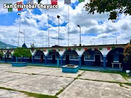
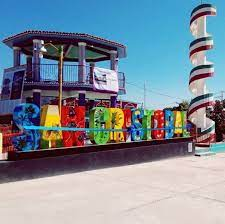
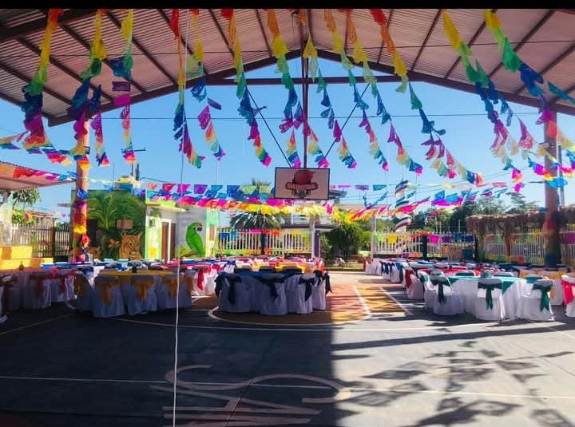
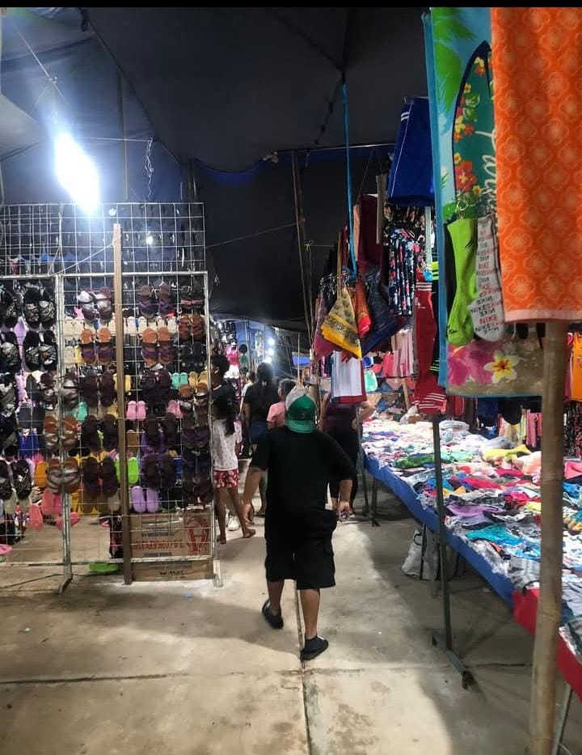
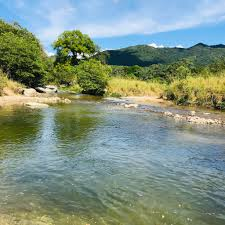

Agencia Municipal

Un lugar donde se toman decisiones que fortalecen a nuestra comunidad.
Quiosco

Centro de encuentros, risas y tradiciones que perduran en el tiempo.
Salón de usos múltiples

Un espacio donde la comunidad se une para aprender, celebrar y compartir.
Fiesta Patronal

Tradición que se vive con el alma, entre danzas, música y corazones unidos.
Iglesia
Refugio espiritual donde la fé y la esperanza se encuentran.
Ríos

Aguas que dan vida y nos recuerdan la belleza de lo natural.